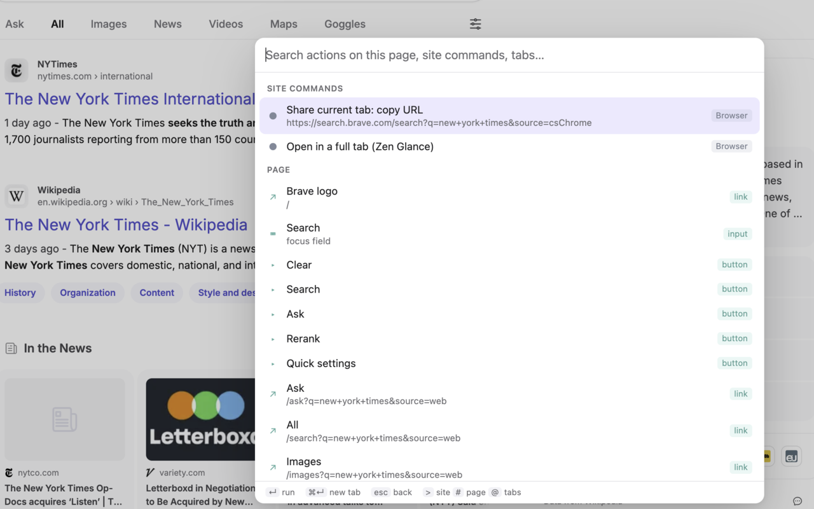

Browser extension
Pagecast
A command palette for the page you are on. Press ⌥. and fuzzy-search every button, link and field, your open tabs, and the commands a site adds of its own.

How it works
The palette indexes the current page in the browser: every element you can act on, named the way a screen reader names it, including ARIA widgets and rows inside open shadow roots that link-hint extensions tend to miss. Nothing is pre-scraped; it reads the page when you open it.
What it searches
- Page: buttons, links, inputs and custom controls, with their accessible name, so Clear or Search is enough to find them.
- Tabs: open tabs, most recently used first.
- Site commands: extra actions for the site you are on — Proton Mail, Microsoft Teams and Azure DevOps ship in the box — plus two everywhere: copy the current URL, and open a preview as a full tab.
Prefixes narrow the search: > site commands, # page elements, @ tabs — or the words site:, page:, tab:, which read better mid-query. Every word must match, so tab: dev.azure tscmf pull finds one tab among dozens, URL included. ⌘↵ opens a link in a new tab, esc goes back or closes and restores focus. While the palette is open it holds the keyboard, so site shortcuts do not fire underneath.
Privacy
No server, no account, no analytics, no remote code. Page content and the tab list are read in memory when the palette opens and are never stored or sent anywhere; the only request a command can make goes to the site you are already on, with your existing session. The full text is the privacy policy.
Install
- Firefox and Zen: install from addons.mozilla.org.
- Chrome, Edge, Brave and Arc: the Chrome Web Store listing is in review.
Under the hood
- Manifest V3 extension in TypeScript, bundled with esbuild; the palette UI lives in a closed shadow root so page styles cannot reach it.
- Search runs on Fuse.js, bundled — no CDN and no remote code, which also keeps store review short.
- Site plugins are a URL matcher plus named selector hooks and a command factory, so a new site is a small file rather than a fork.
- One codebase, two backgrounds: a service worker for Chromium, an event page for Firefox/Zen.
More about the project on nilleb.io/pagecast.